회원은
그냥 조용히 떠납니다
사실 현장에
이탈 신호는 많습니다
- 출석률92% → 61%
- 출석 빈도주 3회 → 주 1회
- 만족도4.8 → 3.2
하지만 대표님은
회원의 속마음을 알 수가 없죠
대표님 눈에는 모두 같은 얼굴입니다
선생님 잘못이 아닙니다
강사 한 명이 스무 명 넘는 회원의 변화를
기억만으로 챙길 수는 없습니다.
트레이너 1명
강사 1명 · 담당 회원 22명항상 회원이 떠난 다음에
수습하고 있다면
첫 신호마지막 수업알게 된 날
이제 센티프로 PT 관리 현황을
실시간 확인하고 해결하세요
출석 빈도 감소만족도 하락만료 임박
그래서, 센티프
센티프는 PT 회원관리를
센티프는 PT 회원관리를
강사별로 보여 줍니다
누가 어떤 회원을 어떻게 관리하고 있는지 한눈에 확인합니다.
센티프를 쓰는 센터는 이렇게 달라집니다.
- 강사별 모니터링강사별 회원관리 현황을 실시간으로 파악합니다
- 이탈 대응회원의 이탈 신호를 먼저 확인하고, 그 신호에 맞게 대응합니다
- 근거 있는 상담신규·재등록 상담을 근거를 놓고 합니다
- 같은 데이터강사와 회원이 같은 데이터를 보며 PT 여정을 이어 갑니다
실제 화면
수업일지 한 장에서 시작해
수업일지 한 장에서 시작해
센터 전체의 관리로 이어집니다
센티프 앱의 실제 화면입니다.
1강사 앱강사가 수업 중에
강사가 수업 중에
수업일지를 작성합니다
세트·영상·메모를 남기면 AI가 문장으로 정리합니다.
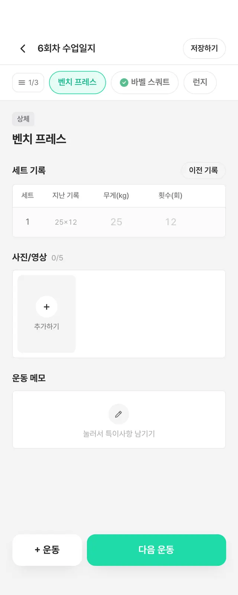
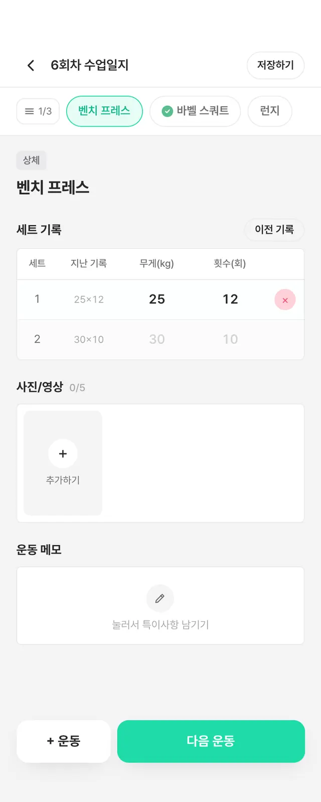
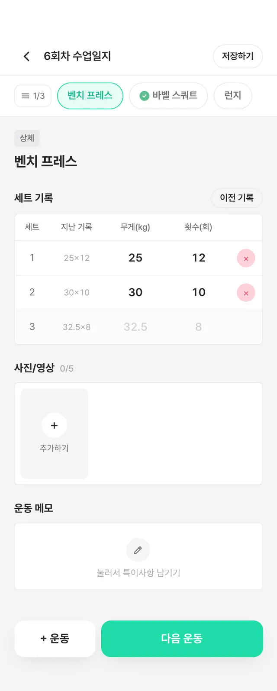
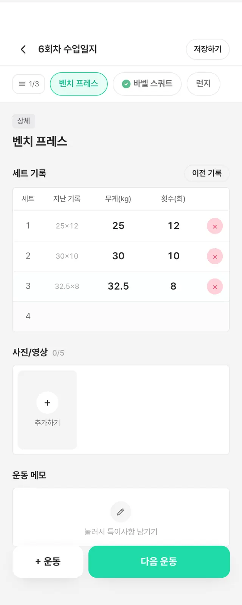
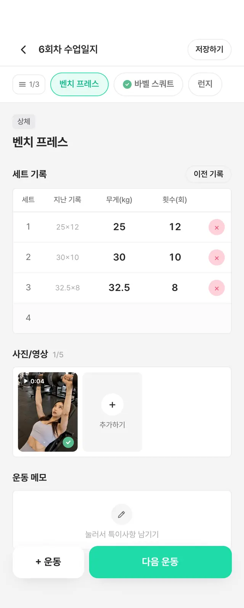
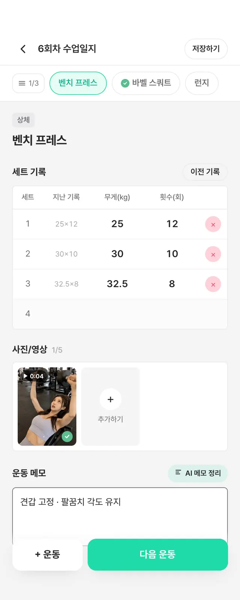
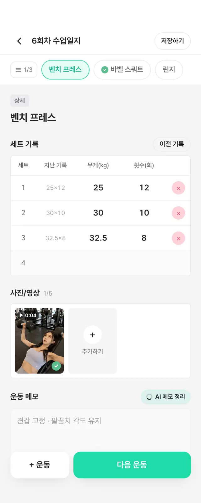
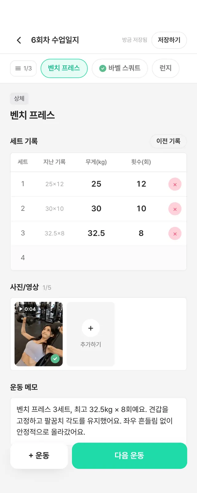
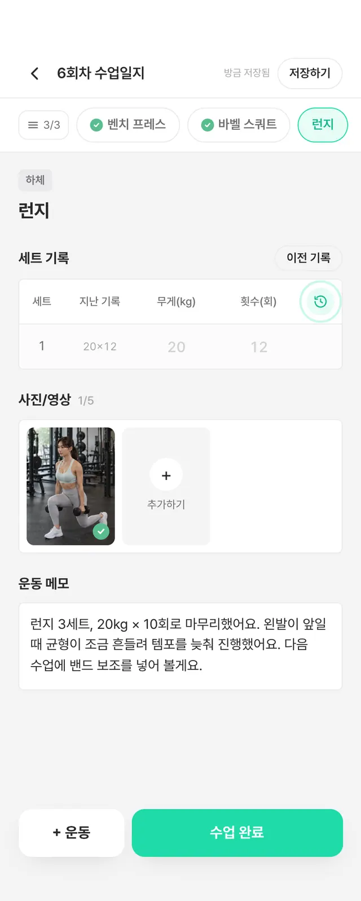
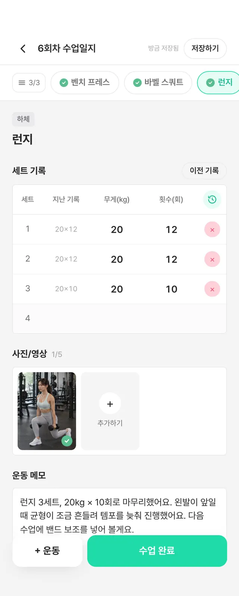
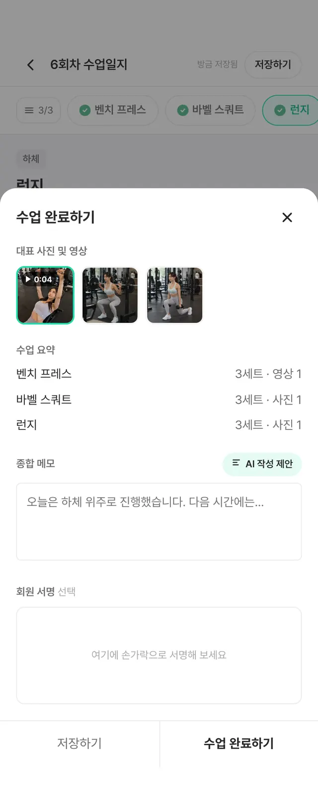
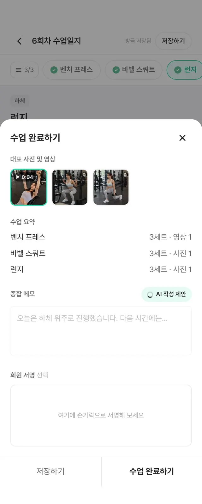
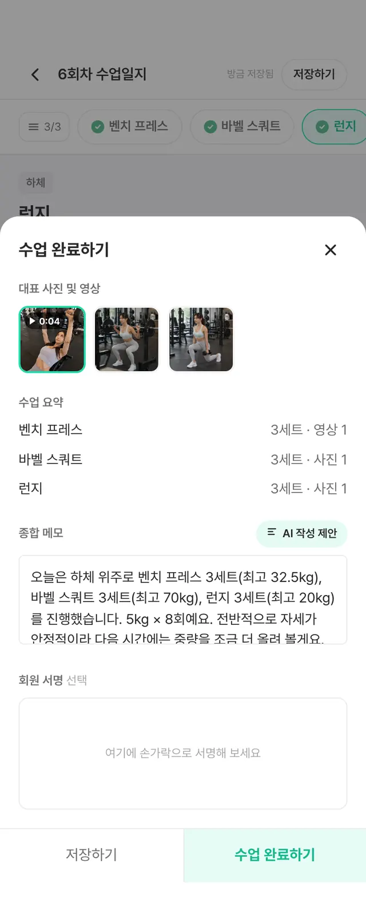
9:41
2회원 앱수업일지는 회원에게
수업일지는 회원에게
바로 전달됩니다
수업이 끝나면 회원의 휴대폰으로 알림이 갑니다.
3회원 앱알림을 누르면
알림을 누르면
오늘의 수업이 바로 열립니다
코치 코멘트와 세트 기록을 언제든 다시 봅니다.
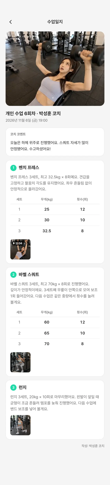
11월 6일 금요일7:52

센티프지금수업일지가 도착했어요박성훈 코치님이 오늘 개인수업 일지를 작성했습니다.
9:41
4강사 앱활동·식단·신체 변화·상품·상담까지
활동·식단·신체 변화·상품·상담까지
강사가 한 곳에서 관리합니다
회원마다 쌓인 기록을 탭 하나로 넘겨 봅니다.
9:41
한지우활성연동여성 · 010-9876-5432
회원 정보 ›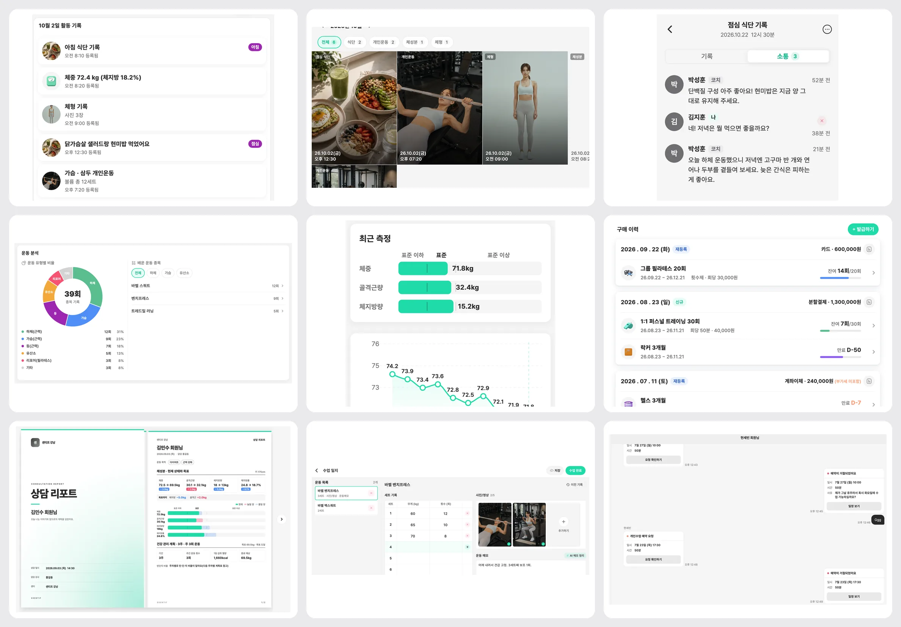
5관리자강사가 여러 명이어도
강사가 여러 명이어도
강사별로 성과를 관리합니다
완료한 수업, 예약, 결석, 담당 회원이 강사마다 보입니다.
6관리자강사 한 명을 누르면
강사 한 명을 누르면
그 강사의 지표가 열립니다
출석률, 신규 등록과 재등록, 담당 회원까지 확인합니다.
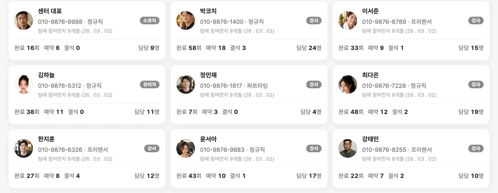
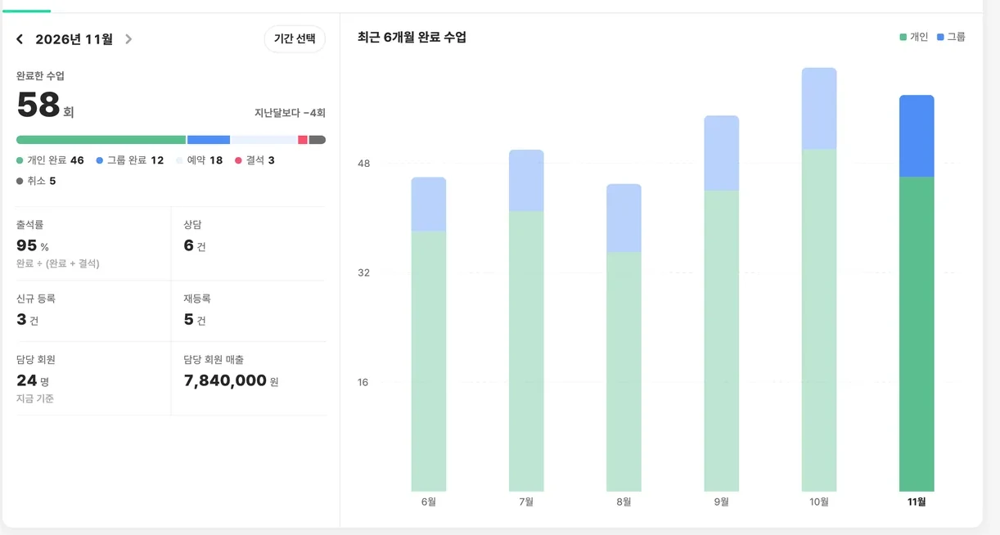
수업일지 한 장이 여기까지 이어집니다.
기록이 쓰이는 순간
센터에 가장 중요한 순간마다
센터에 가장 중요한 순간마다
쌓인 기록이 근거가 됩니다
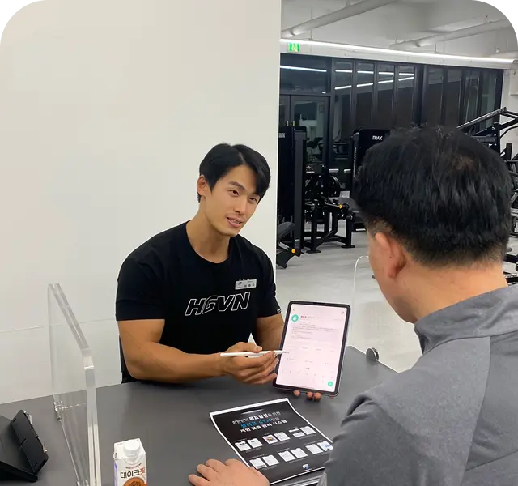
01신규 등록을 상담할 때
지난 회원의 기록이 가장 확실한 설득 자료입니다강사 연차와 상관없이, 모두가 프로다운 회원관리 시스템을 갖춥니다.
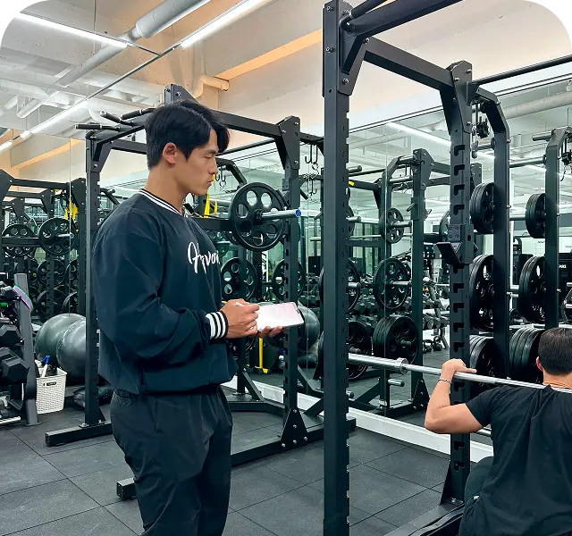
02재등록을 앞둔 회원을 만날 때
눈에 보이지 않는 PT를, 눈에 보이게 만듭니다성과가 더뎠다면 해결책을, 좋았다면 다음 PT 플랜을 제안합니다.
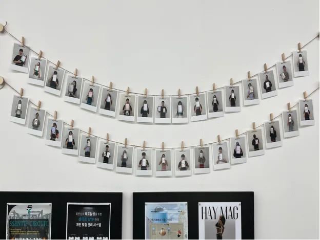
03센터를 홍보할 때
수업일지가 체계적으로 관리하는 센터라는 근거가 됩니다만족한 회원이 주변에 센터를 먼저 소개합니다.
도입 사례
센터 100+ 곳
센티프로 회원을 관리하는 센터입니다.
도입 센터의 말을 그대로 옮깁니다.
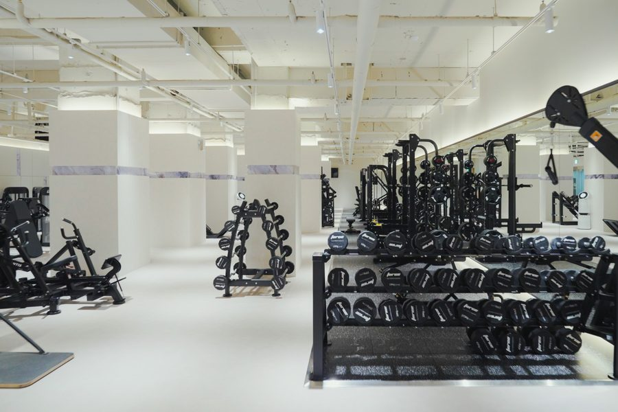
“PT 수업은 끝나도, 관리는 계속됩니다.”
그동안 운동 일지와 식단, 과정 미팅을 네이버 밴드로 관리해왔습니다. 이 관리를 직관적인 데이터로 바꿔 회원에게 차별화된 경험을 드리고 싶어 센티프를 도입했습니다.
웰앤굿피트니스서울 영등포
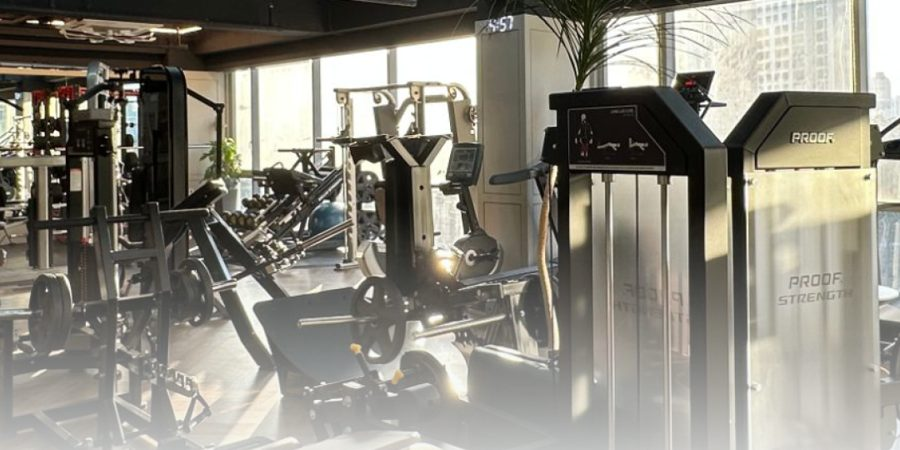
“형식적인 기록 말고, 꺼내 쓰는 기록이요.”
형식적인 기록보다 쓸모 있는 기록을 남기고 싶었습니다. 기록이 수업 안에만 머물지 않고 회원의 일상으로 이어지도록 돕는 도구를 찾았고, 그래서 센티프를 선택했습니다.
위드짐PT 하남미사경기 하남
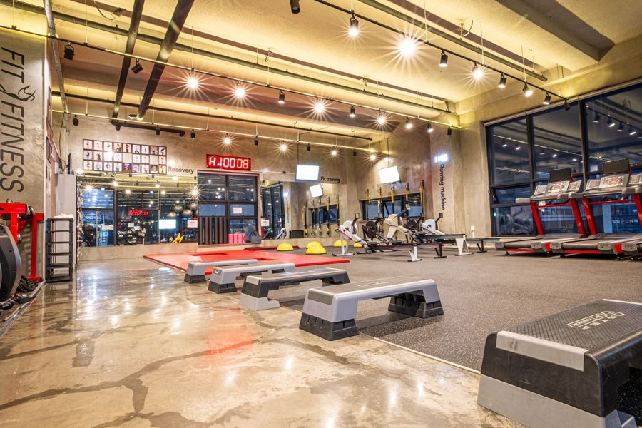
“트레이너가 바뀌어도 회원님의 기록이 끊기지 않는 시스템이 필요했습니다.”
회원님의 식단과 개인 운동, PT 수업 내용을 체계적으로 기록하고 관리하기 위해서였습니다. 트레이너가 바뀌어도 회원님의 운동 과정이 한곳에서 끊기지 않고 이어지는 시스템이 필요했습니다.
핏앤피트니스강원도 원주
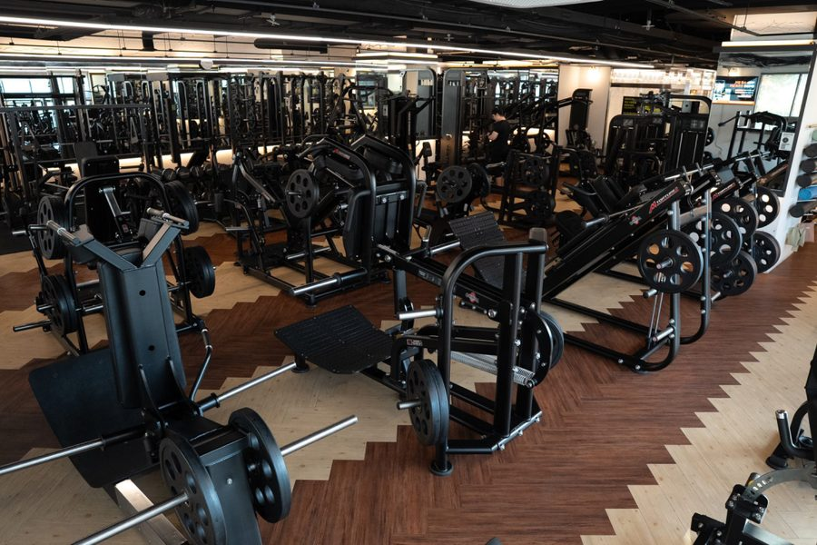
“더 체계적인 관리와 기록을 남기기 위해 센티프를 도입했습니다.”
노트와 서류 대신 앱 하나로 회원님 한 분 한 분을 더 체계적으로 관리하고, 수업마다 기록을 빠짐없이 남기기 위해 센티프를 도입했습니다.
베리타스피트니스경기도 수원
회원관리 만족도
다른 서비스와 비교해 보세요.
다른 서비스와 비교해 보세요.
회원관리 만족도 하나는
자신 있습니다.
강사도 회원도 매일 여는 화면입니다. 직접 비교해 보시면 차이가 보입니다.
4.97 / 5
센티프로 회원을 관리하는 센티프짐의
네이버 플레이스 별점
써 본 강사와 회원의 말


회원 후기
“어플로 식단관리 받으면서 체지방량이 눈에 보이게 감소했어요!!”
“항상 꼼꼼하고 섬세하게 PT를 봐주셔서 날이 갈수록 신뢰감 상승!!!”
“세 번째 PT쌤인데 드디어 인생쌤을 찾은 것 같아요!!”
“피티를 받기 시작해 올해로 벌써 4년째입니다.”
센티프로 관리받는 센티프짐 회원이 직접 남긴 후기입니다.
회원이 떠나기 전에,
센티프로 먼저 확인하세요
10분 통화로, 우리 센터에 맞는
도입 방법을 알려 드립니다.
팀 요금제 월 4만 원대부터
- 1:1 도입 상담센터 구조 파악, 관리자 데모 시연
- 데이터 이전회원·수강권 정보를 옮겨 드립니다
- 온보딩 교육관리자·강사 교육을 나눠 진행합니다
- 전담 케어구성원 단체방에서 전담으로 대응합니다